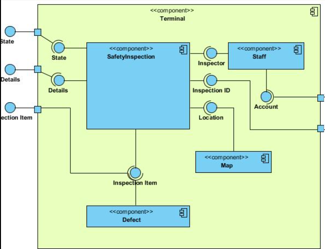
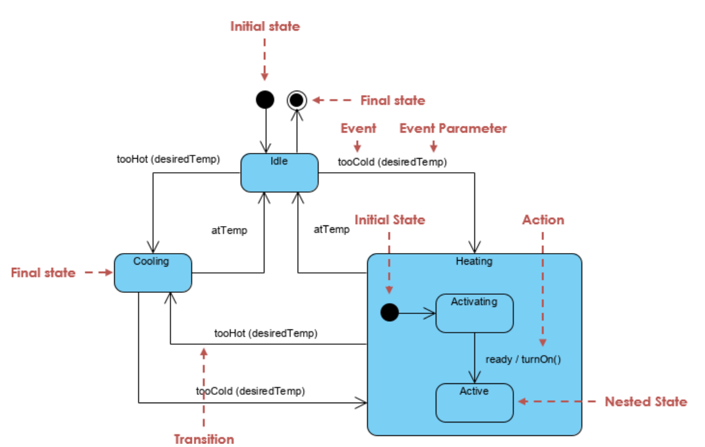

Class Diagram
Lühikirjeldus
Class diagram näitab süsteemi struktuuri, klasside omadusi, meetodeid ja omavahelisi seoseid.
Elemendid
- Klass (Class)
- Atribuudid (Attributes)
- Meetodid (Methods)
- Association
- Inheritance
- Composition
Näidisjoonis

Component Diagram
Lühikirjeldus
Component diagram näitab süsteemi komponente ja nendevahelisi sõltuvusi.
Elemendid
- Komponent
- Interface
- Dependency
- Connector
Näidisjoonis

Sequence Diagram
Lühikirjeldus
Sequence diagram näitab, kuidas süsteemi osad ja objektid suhtlevad. Seda kasutatakse näiteks selleks, et näidata kuidas rakendus ja andmed päringuid saadavad.
Elemendid
- Actor/Objekt
- Lifeline
- Message arrow
- Return message
- Activation bar
Näidisjoonis

State Diagram
Lühikirjeldus
State diagram näitab,kuidas objektid erinevad ja seda,kuidas objekt ühest olekst teise liigub.
Elemendid
- Alguspunkt
- Olek
- Üleminek
- Sündmus
- Lõppoleks
Näidisjoonis
